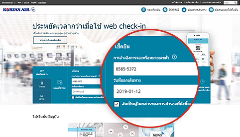
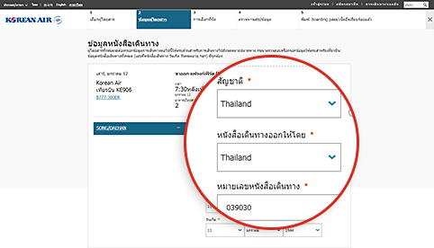
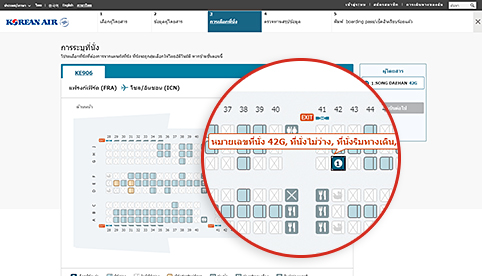
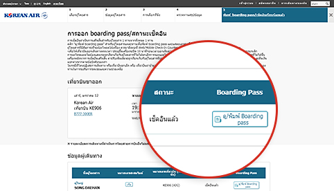

ลดขั้นตอนการเช็คอิน! เตรียมตัวเดินทางได้อย่างสะดวกง่ายดาย!
Mobile / Web Check-in
ช่วยประหยัดเวลา และช่วยให้ท่านสามารถ ผ่อนคลายเมื่อไปถึงสนามบิน
วิธีใช้
| ผู้มีสิทธิ์ | เส้นทางที่ดำเนินการบิน | เวลาที่เปิดให้เช็คอิน |
|---|---|---|
| ผู้โดยสารที่เดินทางด้วยเที่ยวบินของ Korean Air พร้อม e-Ticket ที่ยังไม่หมดอายุ | ทุกเส้นทาง |
|
- (การอ้างอิง 1) เที่ยวบินไป/จากสหรัฐอเมริกา แคนาดา สหราชอาณาจักร และปารีส : 24 ชั่วโมง ~ 1 ชั่วโมง ก่อน ออกเดินทาง, ต้นทาง
- ข้อจำกัดของ Mobile/Web Check-in (คลิกลิงก์นี้เพื่อรับทราบแ)
 โปรดเผื่อเวลาให้เพียงพอสำหรับการตรวจเช็คเพื่อความปลอดภัยและขั้นตอนอื่น ๆ
(ควรเข้ารับการตรวจผ่านทุกด่าน 1 ชั่วโมงก่อนเวลาออกเดินทางสำหรับเที่ยวบินระหว่างประเทศ
และ 20 นาทีก่อนออกเดินทางสำหรับเที่ยวบินในประเทศเกาหลี)
โปรดเผื่อเวลาให้เพียงพอสำหรับการตรวจเช็คเพื่อความปลอดภัยและขั้นตอนอื่น ๆ
(ควรเข้ารับการตรวจผ่านทุกด่าน 1 ชั่วโมงก่อนเวลาออกเดินทางสำหรับเที่ยวบินระหว่างประเทศ
และ 20 นาทีก่อนออกเดินทางสำหรับเที่ยวบินในประเทศเกาหลี)
วิธีการเช็คอิน

-

Step 1 ค้นหาการสำรองที่นั่ง
- เช็คอินง่ายขึ้นถ้าท่านได้ป้อนหมายเลขโปรแกรมสะสมไมล์ของท่านในระหว่างการจอง
- ถ้าไม่พบการสำรองที่นั่งนั้น ให้ป้อนรหัสการจองหรือหมายเลขบัตรโดยสาร จากนั้นป้อนวันที่ออกเดินทางและชื่อ
คุณสามารถเริ่มการเช็คอินทางเว็บโดยป้อนหมายเลขการจองวันที่ออกเดินทางและชื่อผู้โดยสารหากคุณไม่ใช่ผู้ที่ไม่ได้เป็นสมาชิกในเขตการจองตั๋วในหน้าจอหลัก
-

Step 2 ป้อนข้อมูลเอกสารการเดินทาง (เที่ยวบินระหว่างประเทศ)
- ต้องป้อนข้อมูลบนหนังสือเดินทางและเอกสารการเดินทางที่จำเป็นอย่างถูกต้อง หากท่านไม่ได้ป้อนข้อมูลที่ถูกต้อง ท่านอาจจะไม่สามารถเช็คอินได้โดยขึ้นอยู่กับผลการตรวจคัดกรองเบื้องต้นที่เมืองต้นทาง/เมืองปลายทาง
- ตัวเลือกการเช็คอินผ่านมือถือ (Mobile Check-in) จะทำให้ท่านสามารถป้อนข้อมูลหนังสือเดินทางได้ง่ายดายโดยใช้ฟังก์ชันการสแกนหนังสือเดินทาง
ข้อมูลหนังสือเดินทางเช่นสัญชาติประเทศที่ออกหนังสือเดินทางหมายเลขหนังสือเดินทาง ฯลฯ สามารถป้อนได้ในหน้าจอการป้อนข้อมูลขั้นตอนที่สองของผู้โดยสารเมื่อทำการเช็คอินทางเว็บ
-

Step 3 การระบุที่นั่ง
- เลือกที่นั่งที่ต้องการ
- เข้าสู่ระบบโดยป้อน ID ของท่าน (หรือรหัสผ่านสำหรับผู้ที่ไม่ได้เป็นสมาชิก) หากท่านต้องการจะเปลี่ยนหมายเลขที่นั่ง (อย่างไรก็ตาม ต้องบันทึกข้อมูล SKYPASS เอาไว้ก่อนที่จะเข้าสู่ระบบ)
การเช็คอินทางเว็บขั้นตอนที่ 3 คุณสามารถตรวจสอบข้อมูลของแต่ละที่นั่งเช่นหมายเลขที่นั่งตำแหน่งและลักษณะที่นั่งและเลือกที่นั่งที่ต้องการจากหน้าจอการกำหนดที่นั่ง
-

Step 4 เสร็จสิ้นการเช็คอิน
- คลิก "ดู/พิมพ์ Boarding Pass" สำหรับผู้โดยสารแต่ละท่านเพื่อพิมพ์ Boarding Pass ออกมา
- ท่านสามารถออก Boarding Pass ของท่านใหม่และยกเลิกการเช็คอินของท่านก่อนถึงกำหนดเวลาเช็คอินทางออนไลน์
การเช็คอินทางเว็บขั้นตอนที่ 5 ในหน้าจอการเช็คอินเสร็จสมบูรณ์คุณสามารถตรวจสอบสถานะการเช็คอินของเว็บหรือออกบัตรผ่านขึ้นเครื่องพีซี
ขั้นตอนที่สนามบินหลังจากทำการเช็คอินออนไลน์
-

01 เช็คอินออนไลน์และรับ Boarding Pass ของท่าน
- เตรียม Boarding Pass ของท่านให้พร้อม (ไม่ว่าจะเป็น Boarding Pass ในมือถือหรือแบบพิมพ์ออกมา) เพื่อนำมาแสดงที่สนามบินในวันที่ออกเดินทาง
-

02 เดินทางถึงสนามบิน
สำหรับผู้โดยสารที่ถือ Boarding Pass
- กรณีที่ท่านไม่มีสัมภาระที่จะต้องเช็คอิน นำ Boarding Pass ของท่านไปแสดงที่ท่าเทียบเครื่องบิน (Concourse) ได้เลยโดยไม่ต้องแวะที่เคาน์เตอร์เช็คอิน
-
กรณีที่ท่านมีสัมภาระที่จะต้องเช็คอิน
เช็คอินสัมภาระของท่านที่เคาน์เตอร์ (การอ้างอิง 2) ที่จัดไว้สำหรับการเช็คอินออนไลน์โดยเฉพาะและไปที่ท่าเทียบเครื่องบิน (Concourse)
(การอ้างอิง 2) ท่านสามารถเช็คอินสัมภาระของท่านได้อย่างรวดเร็วและง่ายดายที่เคาน์เตอร์เช็คอินกระเป๋าสัมภาระด้วยตนเอง (D1~D17, E1~E17) ในสนามบินอินชอน
สำหรับผู้โดยสารที่ถือ Exchange Voucher
- รับ Boarding Pass ของท่านที่เคาน์เตอร์ที่จัดไว้สำหรับการเช็คอินออนไลน์ นอกจากนี้ ท่านยังสามารถเช็คอินสัมภาระในขณะที่รับ Boarding Pass ของท่าน
-

03 ด่านตรวจเพื่อความปลอดภัยและด่านตรวจคนเข้าเมือง
- ผู้โดยสารและทรัพย์สินส่วนตัวจะต้องเข้ารับการตรวจที่ด่านตรวจเพื่อรักษาความปลอดภัยเพื่อให้แน่ใจถึงความปลอดภัยของผู้โดยสารและเครื่องบิน
- โปรดนำหนังสือเดินทางและเอกสารการเดินทาง (วีซ่า) ที่ยังมีผลใช้ได้ (ตามที่กำหนดโดยประเทศต้นทางและประเทศปลายทาง) มาแสดงและไปติดต่อที่ด่านตรวจคนเข้าเมือง
-

04 ขึ้นเครื่องบิน
- ท่านควรถือ Boarding Pass ของท่านเอง